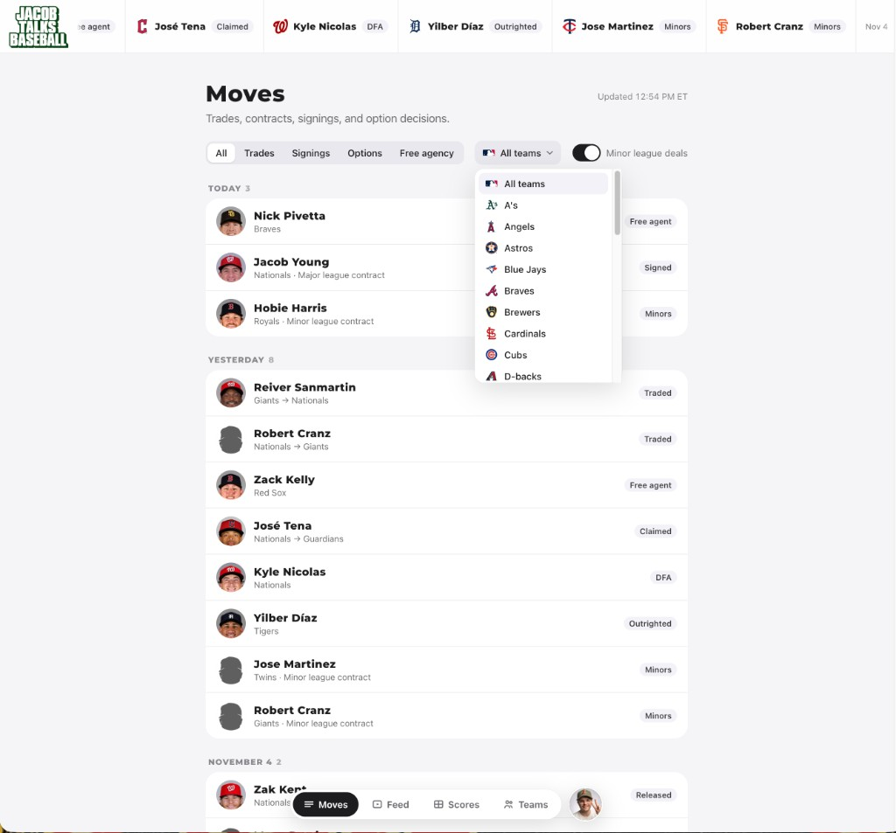

I built the ultimate baseball website for fans.

I love this game. I played from tee-ball through high school, and baseball has stayed at the center of my life long after my last varsity inning. So when the offseason started and a potential lockout started to loom, I did not want to sit around refreshing feeds and rumor accounts. I wanted one calm place where fans could catch up, remember the best moments from last season, and follow where players are signing or getting traded.
That is why I built Jacob Talks Baseball — a fan-first home for moves, scores, teams, highlights, and stories without the noise. The Moves page tracks trades, signings, options, and free-agent deals in a clear timeline. The Feed brings in news and highlights. Scores and Teams round it out so you can relive last season and stay current as rosters shift this winter.
It is the site I wished existed as a kid who learned the game on Little League fields and still checks the transaction wire every November. If you love baseball the way I do — especially in a weird offseason — I hope you will bookmark it and come back often.